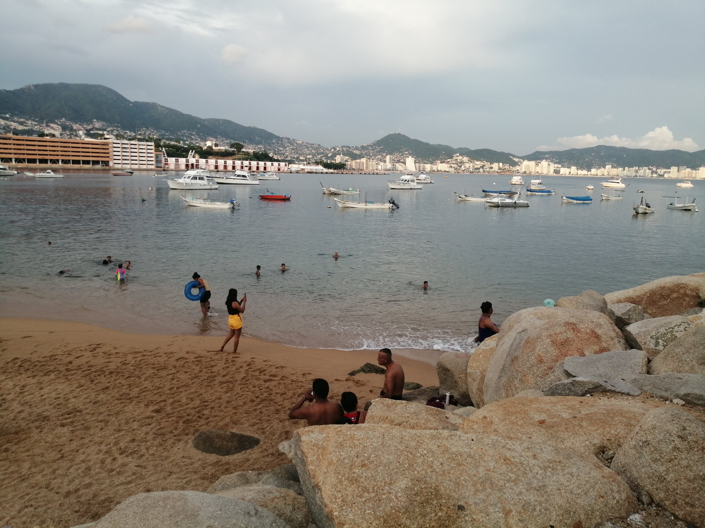

Hola mi nombre es Nayeli Andrade
Tengo 22 años, yo nací el 1 de mayo de 1999, soy de Cuernavaca, Morelos, estoy estudiado una Ingeniería en sistemas, estoy en mi 3° cuatrimestre y aparte estoy estudiando en una academia que se llama Nogara DevCode.
¿Por qué escogí estudiar ingeniería en sistemas?
Decidí estudiar esto porque me gustan mucho las matemáticas y todas las ingenierías llevan matemáticas y en especial en sistemas porque creo firmemente que esta es una de las carreras universitarias que tienen mucho futuro, aparte es tan amplia esta carrera que tiene muchas ramas para escoger la que a ti más te guste.
Soy católica desde niña me inculcaron la religión y actualmente sigo siendo creyente, pero no fanatica.
Mi comida favorita
Es el pescado, los camarones, hamburguesas y tacos.

Clima favorito

Me gustan mucho los días nublados, los dias soliados me gusta siempre y cuando este en la playa.
Lugares

De los lugares donde más me gusta visitar son Tepoztlán, el centro de Morelos y tiendas comerciales.
Me gusta viajar y conocer muchos lugares, desde que yo era niña siempre me he mudado mucho de casa, por diferentes razones, entonces sé iniciar desde 0 muchas veces, a lo que me refiero con eso es que no me cuesta entablar conversación o hacer actividades nuevas.
En un futuro no muy lejano quiero viajar más y conocer por lo menos Latinoamérica.
Me encanta ir a la playa, desde que tenía 6 meses de nacida me llevaban, antes no me gustaba el mar, pero con el paso del tiempo me fui dando cuenta que me encanta y aparte tengo muchas historias y recuerdos de ese lugar.
Grandes héroes en mi vida
Las figuras más importantes en mi vida son mis padres y mis tíos.
De mi papá aprendí a que hay que ser valiente y que siempre hay que enfrentar las cosas, a no esconderse y que siempre que empieces algo terminarlo.
Mi mamá me ha enseñado la nobleza, el amor y la educación ante todo.
Mi tío Agustín a no rendirme y que a las adversidades hay que ponerles buena cara.
Anécdotas
Cuando era niña siempre me iba a la cocina de mi mamá y le quitaba sus trastes y los utilizaba como batería, algún día tendré mi batería de verdad.